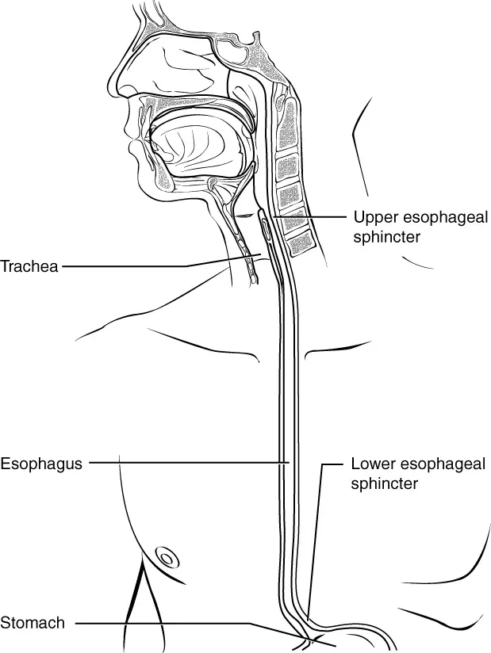
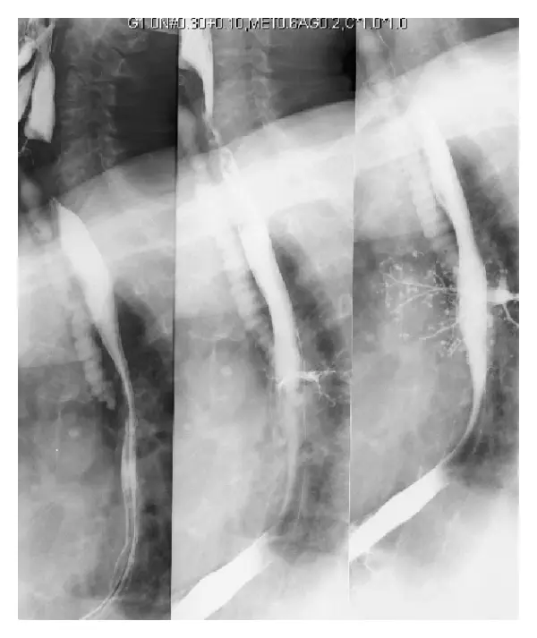

Passage difficile ou douloureux des aliments, dysphagie, régurgitation
1. Définition
Cette situation est un regroupement de trois plaintes : passage difficile des aliments, douleur à la déglutition et remontée des aliments dans la bouche. Par ailleurs, le consensus de l'United European Gastroenterology (UEG) et de l'European Society for Neurogastroenterology and Motility (ESNM), publié en 2025, est la définition de référencew2aac93-11w2aac93-27.
Selon ce consensus, la dysphagie œsophagienne est une difficulté à avaler, ressentie le plus souvent derrière le sternum, qui touche l'œsophage ou son sphincter inférieur. En outre, elle résulte d'anomalies anatomiques, mécaniques ou fonctionnellesw2aac93-27. Cette définition a reçu un accord de 87 % des experts, mais son niveau de preuve reste très basw2aac93-27.
La dysphagie oropharyngée désigne en revanche un trouble de la déglutition qui empêche de déplacer le bolus de façon sûre et efficace de la bouche vers l'œsophagew2aac93-29. Les signes de sécurité sont la pénétration laryngée et l'aspiration, alors que les signes d'efficacité sont les résidus, le reflux nasal et le retard du réflexe de déglutitionw2aac93-29w2aac93-33.
Les symptômes d'accompagnement orientent vers l'étage oropharyngé : toux, étouffement, peur de manger, changement de voix, globus et repas prolongésw2aac93-29. Ainsi, une toux pendant le repas ou une voix mouillée font chercher une cause haute avant de penser à l'œsophagew2aac93-34.
2. Épidémiologie (Suisse, puis Europe)
La prévalence globale de la dysphagie se situe entre 10 % et 20 %, selon la définition retenue et la population étudiéew2aac93-36. Aucune étude n'a mesuré la dysphagie œsophagienne comme entité séparée, de sorte que sa prévalence réelle reste inconnuew2aac93-36.
Une enquête auprès de plus de trente mille adultes américains montre une prévalence de 16 %w2aac93-37. Un adulte sur six est donc concerné à un moment de sa view2aac93-37. Cette donnée n'est pas suisse, donc elle ne sert qu'à situer l'ordre de grandeurw2aac93-37.
2.a Dysphagie oropharyngée selon la population
La prévalence de la dysphagie oropharyngée augmente avec l'âgew2aac93-40. Par ailleurs, les groupes les plus touchés sont les personnes âgées, les patients neurologiques et ceux qui ont une maladie de la tête ou du couw2aac93-40. Dans la population générale, elle atteint 13,4 %, mais elle monte à 55,4 % après un accident vasculaire cérébral et à 72,4 % dans la démencew2aac93-40.
La prévalence dépend de l'outil de mesure : 20,4 % avec un questionnaire, 40,9 % avec l'examen physique et 54,4 % avec le test volume-viscositéw2aac93-41. En outre, les examens instrumentaux la font monter davantage, jusqu'à 81 % en phase chronique d'un accident vasculaire cérébralw2aac93-41.
Le livre blanc de l'European Society for Swallowing Disorders (ESSD) indique que la dysphagie touche 29 % à 64 % des patients après un accident vasculaire cérébralw745ce5-9. Ensuite, chez les moins de 60 ans, elle est surtout liée à une maladie tumorale ou neurologiquew745ce5-13.
2.b Suisse : accident vasculaire cérébral et cancers
En Suisse, environ 16 000 personnes subissent chaque année une attaque cérébrale, selon la Fondation Suisse de Cardiologiewda5da9-3. Par ailleurs, une cohorte prospective suédoise trouve une dysphagie chez 38,8 % des patients admis pour un premier accident vasculaire cérébralw30ee9d-5.
Dans la même cohorte, la dysphagie accompagne un séjour plus long, un transfert plus fréquent en maison de soins et un risque accru de décès hospitalierw30ee9d-5. Ces chiffres suédois s'appliquent à la Suisse par analogie, car aucune cohorte suisse ne mesure cette incidencew30ee9d-5.
L'Office fédéral de la statistique (OFS) recense en 2021 les cancers dont la dysphagie est un symptômewc83488-110. Par ailleurs, entre 2013 et 2017, plus de 790 hommes et 370 femmes reçoivent chaque année un diagnostic de cancer de la cavité buccale et du pharynxwc83488-98. Le cancer de l'œsophage touche environ 450 hommes et 140 femmes par anwc83488-116.
Ces chiffres mesurent l'incidence de la maladie, et non la fréquence de la dysphagie qu'elle provoque. Un classement par incidence ne dit donc rien de leur part dans les dysphagies, car le registre suisse ne mesure que les nouveaux caswc83488-110wc83488-126.
2.c Œsophage : maladies inflammatoires et motrices
Les lignes directrices européennes de 2026 décrivent l'œsophagite à éosinophiles comme la première cause de dysphagie et d'impaction alimentairew06ef11-1w06ef11-9. Par ailleurs, son incidence annuelle dépasse 10 cas pour cent mille habitants, et sa prévalence combinée dépasse 60 cas pour cent mille habitantsw06ef11-10.
Dans une grande série de patients dysphagiques, cette maladie est retrouvée chez 12 % d'entre eux, avec un risque relatif de 9,5 avant 50 answ2aac93-134. En outre, le consensus de 2025 cite aussi une fréquence de 12 % à 23 % chez les patients qui subissent une endoscopie pour dysphagiew2aac93-11w2aac93-130.
L'achalasie est rare : son incidence annuelle est estimée entre 1,07 et 2,2 cas pour cent mille personnes, et sa prévalence entre 10 et 15,7 pour cent millew6e934f-6. Ensuite, le diverticule de Zenker atteint en Finlande 2,9 cas pour cent mille personnes-années, avec une prédominance masculinew3828cc-4.
Une cohorte danoise de 2021 chiffre l'impaction alimentaire à 33,9 épisodes par an pour cent mille adultesw7e05da-13. Deux tiers de ces patients ne reçoivent jamais de diagnostic causal, ce qui laisse passer des œsophagites à éosinophiles et des cancersw7e05da-4.
Chiffre
Population
Source
10 % à 20 %
Dysphagie, population générale
Consensus UEG/ESNM 2025
38,8 %
Premier accident vasculaire cérébral, Suède
Cohorte prospective
16 000 par an
Attaques cérébrales, Suisse
Fondation Suisse de Cardiologie
35 % et 82 %
Maladie de Parkinson, mesure subjective et objective
Livre blanc ESSD
12 %
Œsophagite à éosinophiles chez les dysphagiques
Consensus UEG/ESNM 2025
790 et 370 par an
Cancer cavité buccale et pharynx, hommes et femmes, Suisse
OFS 2021
450 et 140 par an
Cancer de l'œsophage, hommes et femmes, Suisse
OFS 2021
2,9 pour 100 000
Diverticule de Zenker, Finlande
Cohorte nationale
1,07 à 2,2 pour cent mille
Achalasie, incidence annuelle
UEG/ESNM
2.d Histoire naturelle et enjeux
Sans traitement, l'œsophagite à éosinophiles entretient une inflammation qui remodèle la paroi et crée des sténosesw3bd653-37. En outre, les complications respiratoires de la dysphagie oropharyngée comprennent la pneumonie d'inhalation, première cause de décès dans la maladie de Parkinsonw2aac93-116.
Après un accident vasculaire cérébral, jusqu'à 20 % des patients souffrent d'une pneumonie d'inhalation précocew2aac93-116. La dysphagie prolonge les hospitalisations et augmente les coûts, ce qui en fait un enjeu de santé publiquew2aac93-43.
3. Physiopathologie
Le schéma de l'œsophage place les deux sphincters, parce que la plainte se situe entre ces barrières.
Repères de l'œsophage. Ce schéma montre l'œsophage et ses deux sphincters, la trachée restant en avant.

Le cliché brut se lit avant les repères numérotés (œsophage et ses deux sphincters).
La copie annotée (œsophage et ses deux sphincters) porte les repères numérotés de la lecture guidée.
Lecture guidée.
La trachée longe l'œsophage cervical, donc une fausse route haute atteint l'arbre aérien.
Le sphincter supérieur reste fermé à l'entrée de l'œsophage lorsque aucun bolus n'est engagé.
Le sphincter inférieur sépare l'œsophage distal de l'estomac et s'oppose au reflux.
Pièges.
Les traits de la trachée ne doivent pas être lus comme la lumière de l'œsophage.
Ce que l'image décide. Ce repérage distingue une plainte haute, au-dessus du sphincter supérieur, d'une plainte rétrosternale.
Image : OpenStax College, CC BY 3.0, Wikimedia Commons, schéma OpenStax de l'œsophage, consultée le 2026-11-15. Copie annotée : œuvre dérivée sous la même licence.
3.a Déglutition normale
Une déglutition normale exige la coordination étroite de la bouche, du pharynx et de l'œsophage, donc l'atteinte d'un maillon perturbe souvent les autresw2aac93-35. Le système nerveux central commande ce geste par des échanges entre voies sensitives et motrices, avec une activité du cortex moteur, du cortex sensitif et de l'insulaw2aac93-111.
Les signaux sensitifs de la bouche et du pharynx déclenchent la séquence motrice, car ils sont traités dans le tronc cérébral puis dans le cortexw2aac93-111. Au niveau œsophagien, la manométrie mesure la pression de relaxation intégréew2aac93-89. Sa limite supérieure normale est de 15 mmHg lorsque le patient est couché, et de 12 mmHg lorsqu'il est assisw2aac93-89.
3.b Dysphagie oropharyngée
Les patients atteints de dysphagie oropharyngée présentent un temps de déglutition allongé, une fermeture tardive du vestibule laryngé et une ouverture retardée du sphincter supérieur de l'œsophagew2aac93-108. Un déclenchement tardif du réflexe laisse alors tomber les aliments dans les voies aériennes avant ou pendant la déglutitionw2aac93-110.
Une langue faible et une contraction pharyngée réduite laissent des résidus, ce qui provoque une aspiration après la déglutitionw2aac93-110. Le vieillissement favorise ce mécanisme par la sarcopénie, la baisse de la salive et la diminution du réflexe de toux, d'où le risque d'aspiration silencieusew2aac93-104.
Après un accident vasculaire cérébral, les lésions corticales atteignent toutes les phases de la déglutitionw2aac93-105. Par ailleurs, les lésions sous-corticales et du tronc cérébral perturbent surtout la phase pharyngéew2aac93-105. Dans la maladie de Parkinson, la dégénérescence de voies dopaminergiques et non dopaminergiques, la rigidité et la mauvaise coordination augmentent le risque d'aspirationw2aac93-106.
Les cancers de la tête et du cou gênent le passage par l'obstruction tumorale, puis la radiothérapie ajoute une fibrose et une atrophie musculaire tardivesw2aac93-107w2aac93-113. Le diverticule de Zenker est associé à une ouverture restreinte du sphincter supérieur de l'œsophage, ce qui retient les aliments dans la pochew2aac93-113.
3.c Dysphagie œsophagienne obstructive
Le reflux gastro-œsophagien érosif peut évoluer vers la sténose peptique, tandis que l'œsophagite à éosinophiles entraîne un rétrécissement fibreux de la paroiw2aac93-129. L'anneau de Schatzki correspond à une fibrose idiopathique, moins fréquente que ces deux causesw2aac93-129.
L'œsophagite à éosinophiles est une maladie chronique, locale et à médiation immunitaire, caractérisée par une inflammation riche en éosinophilesw3bd653-31. En outre, les lignes directrices de 2026 la rattachent à une inflammation de type 2, dont l'évolution varie selon les phénotypesw06ef11-1w06ef11-10. Une atopie précède le diagnostic dans 50 % à 60 % des casw3bd653-66.
Sans traitement, l'inflammation persiste et remodèle l'œsophage, ce qui crée des sténoses et des anomalies fonctionnellesw3bd653-37. Les patients ont aussi une hypersensibilité à l'acide, liée à une muqueuse dont l'intégrité est altéréew3bd653-52.
Les cancers de l'œsophage obstruent la lumière : le carcinome épidermoïde prédomine dans la partie supérieure et l'adénocarcinome dans la partie inférieurewc83488-115. Ensuite, cette progression explique la dysphagie rapidement évolutive du sujet âgé, que le consensus décrit comme très prédictive de cancerw2aac93-128.
3.d Dysphagie œsophagienne motrice
Dans l'achalasie, un processus probablement inflammatoire détruit les neurones inhibiteurs producteurs de monoxyde d'azotew2aac93-91. Leur perte est responsable d'une hausse de la pression de base du sphincter inférieur et d'un défaut de relaxationw2aac93-91. Le corps de l'œsophage est alors privé de péristaltismew2aac93-91.
Les aliments stagnent alors dans l'œsophage, ce qui provoque la dysphagie, la régurgitation, la douleur thoracique et l'amaigrissementw6e934f-6. La stase favorise aussi la candidose, le diverticule épiphrénique et la pneumonie d'inhalationw2aac93-96w2aac93-100.
Les troubles hypercontractiles et le spasme diffus s'accompagnent d'un péristaltisme prématuré, qui gêne la progression du bolusw2aac93-63. Par ailleurs, le reflux peut aussi provoquer une dysphagie sans obstacle : 40 % des patients atteints de dysphagie non obstructive ont une exposition acide pathologiquew2aac93-145.
Une exposition acide réduite diminue aussi la sensibilité de l'œsophage, ce qui explique l'effet de l'inhibiteur de la pompe à protons sur la dysphagiew2aac93-145.
Cependant, tous les patients atteints de reflux et de dysphagie n'ont pas de motricité œsophagienne inefficace, de sorte qu'une hypersensibilité au passage normal du bolus peut intervenirw2aac93-145w2aac93-146.
3.e Œsophagites infectieuses et médicamenteuses
Toute altération de la clairance œsophagienne favorise la stase des aliments et des sécrétions, ce qui permet la prolifération de Candida albicansw2aac93-98. La candidose est fréquente chez les patients immunodéprimés, même sans trouble moteurw2aac93-98.
Les lésions médicamenteuses surviennent au niveau des rétrécissements anatomiques, et le tiers moyen derrière l'oreillette gauche prédomine dans 75,6 % des casw587d73-2. Les tétracyclines provoquent une atteinte transitoire, alors que le chlorure de potassium et la quinidine provoquent une atteinte persistantew587d73-2.
3.f Tableau de corrélation
Perturbation
Exploration qui la montre
Thérapeutique qui la corrige
Atteinte corticale ou du tronc après accident vasculaire cérébral
Dépistage clinique de la déglutition puis nasofibroscopie ou vidéofluoroscopie
Régime adapté, rééducation de la déglutition
Fibrose ou rétrécissement de la lumière
Endoscopie avec biopsies
Dilatation endoscopique
Inflammation de type 2 de l'œsophage
Biopsies avec au moins six prélèvements, 15 éosinophiles par champ
Inhibiteur de la pompe à protons, corticoïde topique ou régime
Perte des neurones inhibiteurs du sphincter
Manométrie de haute résolution, œsophagogramme chronométré
Dilatation pneumatique, myotomie endoscopique ou chirurgicale
Ouverture restreinte du sphincter supérieur
Vidéofluoroscopie, manométrie pharyngée
Diverticulopexie avec myotomie
Reflux et hypersensibilité à l'acide
pH-impédancemétrie
Inhibiteur de la pompe à protons
Stase œsophagienne et immunodépression
Endoscopie avec lésions muqueuses caractéristiques
Antifongique par voie orale
4. Démarche diagnostique
La démarche exclut d'abord les urgences, puis classe les diagnostics fréquents. L'impaction alimentaire passe devant tous les diagnostics de la liste : une incapacité soudaine d'avaler solides, liquides ou salive impose une endoscopie urgentew2aac93-127w2aac93-128. Elle est donc un drapeau rouge placé en tête de l'algorithme, sans rang E dans la liste des dix diagnostics.
Le consensus européen recommande l'endoscopie œsophago-gastro-duodénale chez tout adulte atteint de dysphagie œsophagiennew2aac93-127. Un diagnostic définitif est rarement posé par l'interrogatoire seul, et c'est pourquoi la dysphagie nécessite une endoscopie rapidew2aac93-128. Le taux de complications de l'endoscopie diagnostique est faible, de 0,1 %w2aac93-130.
La liste suivante classe les dix diagnostics par fréquence décroissante comme cause de dysphagie, d'odynophagie ou de régurgitation. Le badge 🚩 signale une cause grave, et le rang E fixe l'ordre d'exclusion. La dysphagie après accident vasculaire cérébral prime, car le déficit neurologique aigu impose une conduite immédiate.
Les rangs s'affichent sans pourcentage commun, car les chiffres sourcés ont des dénominateurs différents : patients dysphagiques, patients après un accident vasculaire cérébral, incidence dans la population. Chaque rang repose donc sur un argument sourcé et non sur une fréquence unique.
DX.1 — Reflux gastro-œsophagien (œsophagite peptique et sténose peptique) : il occupe le rang 1. Le reflux érosif est une cause fréquente et peut évoluer vers la sténose peptiquew2aac93-129. Dans une grande série endoscopique, l'œsophagite suit les sténoses en fréquencew2aac93-130.
DX.2 — Dysphagie oropharyngée après accident vasculaire cérébral 🚩 E1 : il occupe le rang 2. La Suisse compte environ 16 000 attaques cérébrales par an, et la dysphagie touche 38,8 % des patients d'une cohorte prospectivewda5da9-3w30ee9d-5.
DX.3 — Œsophagite à éosinophiles : il occupe le rang 3. Son incidence annuelle dépasse 10 cas pour cent mille habitants, et elle est retrouvée chez 12 % des patients dysphagiquesw06ef11-10w2aac93-134.
DX.4 — Dysphagie oropharyngée de la maladie de Parkinson : il occupe le rang 4. La dysphagie touche 35 % des patients selon les mesures subjectives et 82 % selon les mesures objectivesw745ce5-18.
DX.5 — Anneau de Schatzki : il occupe le rang 5. Dans une série endoscopique pour dysphagie, il est la troisième anomalie, mais le consensus le juge moins fréquent que le reflux et l'œsophagite à éosinophilesw2aac93-129w2aac93-130.
DX.6 — Cancer de la cavité buccale et du pharynx 🚩 E3 : il occupe le rang 6. Plus de 790 hommes et 370 femmes reçoivent ce diagnostic chaque année en Suisse, ce qui mesure l'incidence du cancer et non la fréquence de la dysphagiewc83488-98.
DX.7 — Cancer de l'œsophage (carcinome épidermoïde et adénocarcinome) 🚩 E2 : il occupe le rang 7. La Suisse compte environ 450 hommes et 140 femmes atteints par anwc83488-116. La survie relative à cinq ans atteint 24 % chez l'hommewc83488-116wc83488-123.
DX.8 — Œsophagite infectieuse (candidose, herpès simplex, cytomégalovirus) : il occupe le rang 8. Candida, le virus herpès simplex et le cytomégalovirus se reconnaissent à l'endoscopie, mais la candidose représente moins de 10 % des dysphagies endoscopiquesw2aac93-130.
DX.9 — Diverticule de Zenker : il occupe le rang 9. Son incidence en Finlande atteint 2,9 cas pour 100 000 personnes-années, au-dessus de celle de l'achalasiew3828cc-4.
DX.10 — Achalasie : il occupe le rang 10. Son incidence annuelle se situe entre 1,07 et 2,2 cas pour cent mille personnesw6e934f-6.
La cohorte finlandaise de 2736 patients place le Zenker au rang 9 et l'achalasie au rang 10w3828cc-3w3828cc-4. Les incidences OFS des deux cancers ne mesurent pas la dysphagie qu'ils causent. Ils sont donc un indicateur suisse de la maladie, non une fréquence du symptômewc83488-110wc83488-126.
4.a Tableau comparatif des dix diagnostics
Diagnostic
Signe clé
Examen qui tranche
Mécanisme
Conduite immédiate
Rang E
DX.1 Reflux
Pyrosis, régurgitation, dysphagie aux solides
Endoscopie avec biopsies
Agression acide, sténose peptique
Inhibiteur de la pompe à protons après exclusion de malignité
Aucun
Accident vasculaire cérébral (DX.2)
Déficit neurologique aigu, toux à la déglutition
Dépistage de la déglutition puis nasofibroscopie
Lésion corticale ou du tronc
Jeûne oral, filière attaque cérébrale par le 144
E1
Œsophagite à éosinophiles (DX.3)
Impaction, adulte jeune atopique
Au moins six biopsies, 15 éosinophiles par champ
Inflammation de type 2
Biopsies puis traitement anti-inflammatoire
Aucun
DX.4 Parkinson
Parkinsonisme, toux au repas
Vidéofluoroscopie
Atteinte neurodégénérative
Adaptation des textures, rééducation
Aucun
Anneau de Schatzki (DX.5)
Dysphagie intermittente aux solides
Endoscopie
Fibrose idiopathique
Dilatation
Aucun
Cancer buccopharyngé (DX.6)
Lésion buccale, adénopathie cervicale
Examen ORL (oto-rhino-laryngologie) avec biopsie
Obstruction tumorale
Orientation ORL rapide
E3
Cancer de l'œsophage (DX.7)
Dysphagie progressive, amaigrissement
Endoscopie avec biopsie
Obstruction de la lumière
Endoscopie rapide
E2
Œsophagite infectieuse (DX.8)
Odynophagie, immunodépression
Endoscopie avec biopsie
Stase, immunodépression
Antifongique ou antiviral
Aucun
DX.9 Zenker
Régurgitation d'aliments non digérés, gargouillis cervical
Vidéofluoroscopie
Ouverture restreinte du sphincter supérieur
Chirurgie ou voie endoscopique
Aucun
Achalasie (DX.10)
Dysphagie aux solides et aux liquides, régurgitation
Manométrie de haute résolution
Perte des neurones inhibiteurs
Dilatation pneumatique ou myotomie
Aucun
4.b Pièges à connaître
L'œsophagite médicamenteuse n'est pas dans la liste, mais elle piège le diagnostic DX.8. Une odynophagie aiguë après la prise de doxycycline, d'un bisphosphonate, d'un anti-inflammatoire non stéroïdien ou de chlorure de potassium doit la faire évoquerw587d73-2aips-65165-11. Elle guérit le plus souvent en quelques jours, donc l'essentiel est d'arrêter le médicament en causew587d73-2.
Les causes neuromusculaires entrent aussi dans la démarche : la sclérose latérale amyotrophique, la myasthénie et la polymyosite touchent l'étage oropharyngéw2aac93-52. La myasthénie atteint tous les domaines de la déglutition, et 75 % des aspirateurs silencieux développent une pneumonie d'inhalationwd1395b-5wd1395b-6. Le clinicien recherche donc la fatigabilité, un ptosis et des fasciculations.
Un inhibiteur de la pompe à protons donné sans bilan peut masquer un cancer et retarder le diagnostic, car la monographie suisse exclut la malignité devant une dysphagieaips-55609-13. En médecine de premier recours, la valeur prédictive positive de la dysphagie pour un cancer de l'œsophage atteint jusqu'à 5,5 %, ce qui justifie l'endoscopie rapidew2aac93-128. Une cohorte endoscopique de patients dyspeptiques a rapporté 66,7 % pour ce signe, mais ce chiffre vient d'un centre tertiaire et ne s'applique pas au premier recourswd122d9-3.
5. Anamnèse ciblée et drapeaux rouges
L'anamnèse commence par l'urgence, puis elle situe la gêne dans l'espace et dans le temps. Une apparition brutale d'une incapacité d'avaler, y compris la salive, suggère une impaction alimentaire et déclenche une endoscopie urgentew2aac93-128w2df0cf-5. Le médecin demande donc d'abord depuis quand le patient ne peut plus rien avaler.
5.a Où et comment la gêne survient
La question sur le siège de la gêne a une précision limitée, car l'inconfort est ressenti au creux sus-sternal même quand la cause est œsophagiennew2aac93-126. Quatre questions distinguent la cause oropharyngée de la cause œsophagienne avec 80 % de justesse si l'une reçoit une réponse positivew2aac93-126.
Y a-t-il un retard au déclenchement de la déglutition ? Ce retard traduit un défaut de commande du réflexe pharyngé, donc une cause hautew2aac93-126w2aac93-110.
Le patient a-t-il un reflux nasal pendant la déglutition ? Cette remontée indique une fermeture insuffisante du voile, qui signe une atteinte oropharyngéew2aac93-126w2aac93-29.
Tousse-t-il pendant la déglutition ? La toux montre que le bolus entre dans les voies aériennes avant ou pendant le réflexew2aac93-126w2aac93-110.
Doit-il avaler plusieurs fois pour dégager le bolus ? Ce geste compense des résidus pharyngésw2aac93-126w2aac93-110.
Il faut ensuite préciser si la gêne touche les solides seuls ou les solides et les liquides. Les solides seuls évoquent un obstacle mécanique, alors que les solides et les liquides évoquent un trouble moteurw2aac93-128. Une dysphagie qui progresse évoque une cause obstructive, tandis qu'une dysphagie intermittente évoque une cause non obstructivew2aac93-126.
La chronologie sépare aussi les maladies. En outre, une dysphagie œsophagienne d'origine maligne progresse plus vite et a une forte valeur prédictive de cancer chez le sujet âgéw2aac93-128. Chez l'adulte jeune, l'œsophagite à éosinophiles se manifeste par une dysphagie aux solides, des impactions et des douleurs thoraciques non liées à la déglutitionw3bd653-34.
5.b Terrain, comorbidités et médicaments
Les caractéristiques cliniques d'un terrain à risque d'œsophagite à éosinophiles sont le sexe masculin, le jeune âge et une atopie ou une allergiew2aac93-131. Une atopie précède le diagnostic dans 50 % à 60 % des cas, donc l'interrogatoire explore asthme, eczéma et allergiesw3bd653-66.
Le reflux explique parfois la dysphagie : 40 % des patients atteints de dysphagie non obstructive ont une exposition acide pathologiquew2aac93-145. Le médecin interroge donc les brûlures rétrosternales et les régurgitations acides, car un inhibiteur de la pompe à protons peut les soulagerw2aac93-145.
Les maladies systémiques cherchées comprennent la sclérodermie, le diabète, l'hypothyroïdie, la sclérose en plaques, la maladie de Parkinson et la sclérose latérale amyotrophiquew2aac93-52w2aac93-54. En outre, les infections par Candida et par le virus herpès simplex donnent une dysphagie œsophagienne, surtout chez l'immunodépriméw2aac93-54w2aac93-98.
L'anamnèse médicamenteuse recherche trois situations. Ensuite, la première est l'œsophagite par comprimé. Plus de 650 cas rapportés impliquent plus de 30 médicaments, dont les tétracyclines, les anti-inflammatoires non stéroïdiens, le chlorure de potassium et les bisphosphonatesw587d73-2. La monographie suisse de l'alendronate demande d'interrompre le traitement en cas de douleur à la déglutition ou de douleur rétrosternaleaips-65165-11. Une sténose ou une achalasie contre-indique aussi Binosto, qui ne doit pas être administré à des femmes enceintesaips-65165-11.
La deuxième situation est la prise des opioïdes, dont l'usage élevé est associé à une relaxation altérée du sphincter inférieurw2aac93-94. La troisième est la liste des inhibiteurs calciques, qui réduisent la vigueur des contractions œsophagiennesw2aac93-185. Le médecin demande aussi comment le patient avale ses comprimés, car la position et la quantité d'eau protègent l'œsophageaips-65165-4.
5.c Retentissement et signes d'alarme
Les signes d'alarme digestifs comprennent la perte de poids involontaire, les vomissements persistants, la dysphagie, l'hématémèse et le mélénaaips-55609-13. Ensuite, les signes d'alarme isolés manquent de sensibilité pour le cancer, mais la dysphagie a une valeur prédictive positive allant jusqu'à 5,5 % pour le cancer de l'œsophage en premier recoursw2aac93-128.
Les complications respiratoires se cherchent par la toux, les pneumonies répétées et la voix mouilléew2aac93-34w2aac93-115. Par ailleurs, l'allongement des repas et les difficultés à gérer la salive indiquent un trouble oropharyngé qui justifie une évaluation instrumentalew2aac93-171. Dans une série, quarante et un pour cent des patients dysphagiques ressentent panique ou anxiété pendant les repasw2aac93-122.
Drapeau rouge
Signification
Action immédiate
Impossibilité soudaine d'avaler, hypersialorrhée
Impaction alimentaire
Endoscopie urgente, dans les 2 à 6 heures si l'obstruction est complète
Déficit neurologique aigu, trouble de la parole
Accident vasculaire cérébral
Appel du 144, jeûne oral, filière attaque cérébrale
Dysphagie progressive avec amaigrissement
Cancer de l'œsophage
Endoscopie rapide avec biopsies
Odynophagie après un comprimé
Œsophagite médicamenteuse
Arrêt du médicament, adaptation de la prise
Toux au repas, pneumonies répétées
Aspiration
Évaluation instrumentale de la déglutition
Hématémèse ou méléna
Saignement digestif haut
Endoscopie en urgence
Immunodépression avec odynophagie
Œsophagite infectieuse
Endoscopie avec biopsie
6. Examen physique ciblé, région par région
L'examen physique ne remplace pas l'exploration instrumentale, car le consensus européen déconseille l'évaluation clinique de la déglutition seule pour caractériser la dysphagie oropharyngéew2aac93-165. Il oriente cependant le bilan, repère les urgences et évalue les complications.
6.a Examen général et état nutritionnel
L'état nutritionnel s'apprécie avant le reste, parce qu'une perte de poids récente change l'urgence de l'endoscopie.
Le normal correspond à un patient bien hydraté, de poids stable, qui gère sa salive et parle d'une voix claire. Le pathologique associe amaigrissement, déshydratation et salive mal gérée, trois signes d'une dysphagie anciennew2aac93-119w2aac93-171.
La dénutrition touche 45,3 % des patients âgés dysphagiques d'une unité de gériatrie aiguë, et elle prolonge l'hospitalisationw2aac93-119. Le médecin pèse donc le patient et recherche des signes de déshydratation, dont la prévalence varie de 19 % à 100 % chez les dysphagiquesw2aac93-120.
6.b Examen neurologique
L'examen neurologique vient ensuite, parce qu'un déficit aigu de la déglutition impose le jeûne et la filière vasculaire.
L'examen cherche d'abord un déficit moteur ou sensitif d'un côté du corps, un trouble de la parole, une atteinte du visage ou une cécité subite, signes d'attaque cérébralewda5da9-9wda5da9-10. Chaque minute compte dans ce cas, et le patient ne doit rien avaler avant le dépistage de la déglutitionwda5da9-5w0a1251-11.
Le geste consiste à demander au patient de parler, de sourire, de lever les deux bras et de dire son nom. La dysarthrie est un facteur indépendant de dysphagie après un accident vasculaire cérébral, avec un odds ratio ajusté de 1,85w30ee9d-5. Sa présence doit donc déclencher un dépistage formel de la déglutition.
Le score du Gugging Swallowing Screen (GUSS) se calcule sur 20 points, après contrôle de la vigilance, de la salive et de la toux volontairew30ee9d-16. En outre, un score de 20 points correspond à l'absence de dysphagiew30ee9d-16. Un score de 19 à 15 correspond à une dysphagie légère, de 14 à 10 à une dysphagie modérée et de 9 à 0 à une dysphagie sévèrew30ee9d-16.
Dans le parkinsonisme, la rigidité musculaire et la mauvaise coordination augmentent le risque d'aspiration, donc le médecin cherche tremblement, bradykinésie et rigiditéw2aac93-106. Il cherche aussi des signes de maladie neuromusculaire, car la myasthénie et la polymyosite touchent surtout l'étage oropharyngéw2aac93-52.
6.c Bouche, pharynx et cou
La bouche et le cou se regardent région par région, parce qu'une lésion visible explique une dysphagie haute.
L'inspection de la bouche et du pharynx recherche une lésion tumorale, une candidose, un mauvais état dentaire et une hyposialiewc83488-106w2aac93-104. Ensuite, le tabac et l'alcool, surtout les alcools forts, sont les principaux facteurs de risque de ce cancerwc83488-106. Leur association peut majorer le risquewc83488-106.
La palpation du cou cherche une masse, une adénopathie ou une tuméfaction thyroïdienne, car une compression extrinsèque peut donner une dysphagiew2aac93-162. Une échographie thyroïdienne ou un scanner du cou précise alors l'étendue de la maladie, et un scanner thoracique évalue un cancer du poumon comprimant l'œsophagew2aac93-162.
Un gargouillement cervical après le repas et la régurgitation d'aliments non digérés évoquent un diverticule de Zenker, lié à une ouverture restreinte du sphincter supérieur de l'œsophagew2aac93-113. Par ailleurs, les ostéophytes cervicaux, fréquents chez le sujet âgé, peuvent aussi gêner la déglutitionw2aac93-113.
6.d Thorax, abdomen et peau
Le thorax et l'abdomen ferment l'examen somatique, parce qu'une douleur projetée peut mimer une cause œsophagienne.
L'auscultation pulmonaire cherche des crépitants ou une toux associée aux repas, car l'aspiration conduit à la pneumonie d'inhalationw2aac93-115w2aac93-117. Une macroaspiration de sécrétions colonisées est une cause majeure de cette pneumoniew2aac93-117.
L'examen cutané et articulaire cherche les signes de sclérodermie et de polyarthrite rhumatoïde, qui provoquent une dysphagie œsophagienne par fibrose et inflammationw2aac93-53. En outre, le médecin palpe aussi l'abdomen et le creux épigastrique à la recherche d'une masse ou d'une douleurw2aac93-128.
6.e Épreuve de déglutition au lit du patient
L'épreuve de déglutition se fait avec une gorgée d'eau, parce qu'elle juge la toux et la voix avant de nourrir.
La prévalence de dysphagie atteint 40,9 % avec l'examen physique et 54,4 % avec le test volume-viscositéw2aac93-41. Ces tests dépistent donc sans confirmer, et ils renvoient vers la nasofibroscopie ou la vidéofluoroscopiew2aac93-165w2aac93-173.
La nasofibroscopie est contre-indiquée en cas d'obstruction nasale bilatérale complète, de fréquence respiratoire supérieure à 35 par minute, de conscience altérée ou de refus de l'alimentation oralew2aac93-168. Le pathologique se traduit alors par des résidus ou une aspiration visibles pendant le gestew2aac93-167.
Région
Normal
Pathologique
Piège
Bouche et pharynx
Muqueuse saine, salive gérée
Lésion tumorale, candidose
Un globus ou une xérostomie miment la dysphagie
Cou
Pas de masse
Masse thyroïdienne, adénopathie
Une compression extrinsèque peut ne pas se voir à l'endoscopie
Neurologique
Parole claire, mouvements symétriques
Déficit, dysarthrie
Une aspiration silencieuse reste muette
Thorax
Murmure vésiculaire normal
Crépitants, toux au repas
La pneumonie d'inhalation est sous-estimée
Peau et articulations
Souple
Sclérodermie, polyarthrite
Cause œsophagienne rare
7. Approche syndromique
L'approche syndromique regroupe les signes en profils qui orientent le premier examen. Chaque syndrome combine des signes fonctionnels, que le patient décrit, et des signes physiques, que le médecin recherche au lit du malade.
7.1 Syndrome oropharyngé
Les signes fonctionnels sont la toux ou l'étouffement pendant la déglutition, la peur de manger, le changement de voix, le globus et les repas prolongésw2aac93-29. Par ailleurs, le patient décrit aussi une sensation d'aliments collés dans la gorge et une restriction de certaines texturesw2aac93-34.
Les signes physiques comprennent une voix mouillée, des résidus buccaux, un reflux nasal et une toux à la déglutition d'un verre d'eauw2aac93-33w2aac93-34. Le mécanisme est un retard du réflexe ou un résidu pharyngé qui laisse passer le bolus dans les voies aériennesw2aac93-110. Le geste de recherche est un test de déglutition, puis la nasofibroscopie ou la vidéofluoroscopiew2aac93-165w2aac93-173.
Ce syndrome évoque l'accident vasculaire cérébral, la maladie de Parkinson, la maladie neuromusculaire ou le cancer de la tête et du couSyndrome oropharyngé : définition. Ensuite, il évoque aussi une cause structurelle, comme le diverticule de Zenker ou les ostéophytes cervicauxw2aac93-102w2aac93-113.
La dysphagie oropharyngée est un trouble qui empêche de déplacer le bolus de façon sûre et efficace de la bouche vers l'œsophagew2aac93-29.
Les signes de sécurité sont la pénétration laryngée et l'aspiration, tandis que les signes d'efficacité sont les résidus et le reflux nasalw2aac93-33.
7.2 Syndrome œsophagien obstructif
Le signe fonctionnel central est une dysphagie aux solides qui progresse avec le tempsw2aac93-128w2aac93-126. Le patient montre souvent le sternum, et il adapte son alimentation vers des textures mollesw2aac93-27w2aac93-34.
Le mécanisme est un rétrécissement de la lumière par une sténose peptique, un anneau, une fibrose ou une tumeurw2aac93-129w2aac93-55. Les signes physiques sont rares, mais l'amaigrissement et une adénopathie suggèrent un cancer, ce qui impose l'endoscopiew2aac93-128.
Cette distinction entre obstacle fixe et obstacle intermittent guide le choix entre une endoscopie rapide et une endoscopie programméeObstacle fixe et obstacle intermittent.
Le bolus alimentaire solide bute sur un obstacle fixe, tandis que les liquides passent encorew2aac93-128.
La dysphagie devient alors progressive si l'obstacle est tumoral, ou intermittente si l'obstacle est un anneauw2aac93-126.
7.3 Syndrome œsophagien moteur
Les signes fonctionnels sont la dysphagie aux solides et aux liquides, la régurgitation, la douleur thoracique et l'amaigrissementw6e934f-6w2aac93-128. La dysphagie est intermittente dans les troubles moteurs, alors qu'elle est progressive dans les causes obstructivesw2aac93-126.
Le mécanisme associe un défaut de relaxation du sphincter inférieur et une perte du péristaltisme dans l'achalasiew2aac93-91. La régurgitation de salive ou d'aliments non digérés peut atteindre les voies aériennes, ce qui expose à l'aspirationw2aac93-100. L'examen clinique est pauvre, et la manométrie de haute résolution tranchew6e934f-7.
7.4 Syndrome d'impaction alimentaire
L'impaction se manifeste par une odynophagie, une douleur thoracique diffuse, une sensation d'étouffement, des vomissements et une incapacité d'avaler les liquides ou la salive, qui conduit à l'hypersialorrhéew7e05da-6. Par ailleurs, une atteinte respiratoire par aspiration peut s'y ajouterw7e05da-6.
Le mécanisme est l'arrêt d'un bolus, souvent de viande, sur une sténose, un anneau ou une muqueuse inflammatoirew7e05da-17w7e05da-18. Dans une cohorte danoise, 55,3 % des patients avaient déjà présenté un épisode, ce qui indique une maladie sous-jacente non traitéew7e05da-13.
7.5 Syndrome d'odynophagie
Le signe fonctionnel est une douleur à chaque déglutition, souvent rétrosternale. Les causes principales sont l'œsophagite infectieuse, l'œsophagite médicamenteuse et le reflux sévèrew587d73-2w2aac93-130.
Le geste de recherche est l'examen de la bouche à la recherche d'une candidose, puis l'endoscopie, qui montre des érosions ou des ulcérations et une muqueuse exsudativew587d73-2w2aac93-130. Le mécanisme est une agression chimique ou infectieuse de la muqueuse, souvent au niveau des rétrécissements anatomiquesw587d73-2.
7.6 Syndrome d'aspiration et de dénutrition
Les signes fonctionnels sont la toux, les pneumonies répétées, l'amaigrissement et l'anxiété lors des repasw2aac93-115w2aac93-122. Les signes physiques sont des crépitants et une perte de masse musculairew2aac93-118.
Le mécanisme est la macroaspiration de sécrétions colonisées, qui provoque une pneumonie, puis une sarcopénie associée à la pneumoniew2aac93-117w2aac93-118. Ce syndrome signale un risque de décès élevé, d'où l'urgence de l'évaluation instrumentalew2aac93-114.
Syndrome
Signes fonctionnels
Signes physiques
7.1 Oropharyngé
Toux au repas, globus, repas longs
Voix mouillée, résidus, reflux nasal
7.2 Obstructif
Solides seuls, progression
Amaigrissement, adénopathie
7.3 Moteur
Solides et liquides, régurgitation, douleur thoracique
Examen pauvre, manométrie décisive
7.4 Impaction
Impossibilité d'avaler la salive, hypersialorrhée
Détresse, salive débordante
7.5 Odynophagie
Douleur à chaque déglutition
Candidose buccale, signes d'immunodépression
7.6 Aspiration
Toux, pneumonies, anxiété
Crépitants, perte musculaire
7.7 Termes proches qui imitent la dysphagie
La classification internationale des maladies range la dysphagie parmi les symptômes et les signes, et la définit simplement comme une difficulté à avalerw2aac93-28. Ensuite, l'Organisation mondiale de gastroentérologie la décrit comme la sensation que les aliments ou les liquides sont bloqués entre la bouche et l'estomacw2aac93-28.
Le globus et la xérostomie miment une dysphagie oropharyngée, donc l'interrogatoire doit les écarter avant toute explorationw2aac93-126. La dysphagie fonctionnelle selon les critères de Rome IV désigne une gêne à avaler sans anomalie structurelle, motrice ou obstructive qui l'expliquew2aac93-124. Le médecin ne pose donc ce diagnostic qu'après avoir exclu une cause organiquew2aac93-124.
La dysphagie n'est pas l'odynophagie, qui désigne la douleur ressentie pendant le passage du bolus. L'inversion de ces deux termes retarde l'enquête, car l'odynophagie oriente d'abord vers une lésion de la muqueuse, notamment infectieuse ou médicamenteusew587d73-2w2aac93-130.
La régurgitation est la remontée passive de contenu non digéré vers la bouche. Elle accompagne la rétention œsophagienne de l'achalasie, mais aussi le reflux, et ne doit pas être confondue avec le vomissementw6e934f-6w2aac93-145.
Les situations voisines comprennent la dyspepsie et la douleur thoracique non cardiaque, que le même parcours diagnostique doit distinguer de la dysphagie vraieImpaction alimentaire : définition. La douleur thoracique d'origine œsophagienne est fréquente dans les troubles hypercontractiles, ce qui impose d'écarter d'abord une cause cardiaquew2aac93-188.
L'incapacité aiguë d'avaler est un cas à part. Une incapacité soudaine d'avaler les solides, les liquides ou la salive peut révéler une impaction alimentaire dans l'œsophagew2aac93-128.
Cette impaction constitue un drapeau rouge, car l'endoscopie est alors l'approche thérapeutique la plus courantew2aac93-127w2aac93-128.
7.8 Ce que cette plainte n'est pas
La situation ne désigne pas une maladie unique parce qu'elle recouvre plusieurs mécanismes. Le consensus la classe d'abord selon la région en cause, œsophagienne ou oropharyngée, parce que chaque région exige un bilan et un traitement propresw2aac93-17.
Elle ne se limite pas non plus aux sujets âgés. Chez l'adulte jeune, la dysphagie augmente surtout parce que le reflux gastro-œsophagien et l'œsophagite à éosinophiles sont plus souvent diagnostiquésw2aac93-16.
8. Diagnostic positif et critères
Le diagnostic positif ne repose pas sur le symptôme parce que la dysphagie est un signe commun à de nombreuses maladies. Il repose sur des critères propres à chaque entité, que le tableau final résume, avec l'année de la société savante qui les a publiés.
8.a Dysphagie œsophagienne et oropharyngée
Le consensus UEG/ESNM de 2025 définit la dysphagie œsophagienne comme une difficulté à avaler, sentie derrière le sternum, causée par une anomalie anatomique, mécanique ou fonctionnellew2aac93-11w2aac93-27. En outre, il définit la dysphagie oropharyngée comme un trouble de sécurité ou d'efficacité de la déglutition, avec pénétration, aspiration ou résidusw2aac93-29.
La dysphagie fonctionnelle reste un diagnostic d'exclusion. Les critères de Rome IV l'admettent seulement en l'absence de cause structurelle, motrice ou obstructive, de reflux et d'œsophagite à éosinophilesw2aac93-124w2aac93-205.
8.b Œsophagite à éosinophiles
Les lignes directrices européennes de 2026 exigent des symptômes de dysfonction œsophagiennew06ef11-1. Ensuite, elles exigent aussi au moins 15 éosinophiles par champ à fort grossissement, après exclusion des autres causesw06ef11-11. Elles recommandent au moins six biopsies, prélevées à au moins deux niveaux de l'œsophagew06ef11-11.
Ces critères distinguent la maladie d'une éosinophilie œsophagienne asymptomatique, qui ne suffit pas à poser le diagnosticw06ef11-11. L'aspect endoscopique seul manque aussi de sensibilité, donc la biopsie reste indispensable même quand l'œsophage paraît normalw06ef11-11w2aac93-137.
Les lignes directrices de 2017 ne retiennent plus la réponse aux inhibiteurs de la pompe à protons comme critère diagnostiquew3bd653-2w3bd653-48. Par ailleurs, les répondeurs appartiennent au même continuum que les non-répondeursw3bd653-2w3bd653-31. Les signes endoscopiques reconnus sont l'œdème, les anneaux, les exsudats, les sillons et la sténosew2aac93-135.
8.c Achalasie et troubles moteurs
Selon les recommandations européennes UEG/ESNM, l'achalasie associe une relaxation insuffisante du sphincter inférieur et une absence de péristaltismew6e934f-18. La manométrie est l'examen de référence parce qu'elle mesure la pression de relaxation intégrée et la contractilité du corps de l'œsophagew6e934f-7w6e934f-30.
La manométrie de haute résolution distingue trois sous-types. Le type I montre 100 % d'échec du péristaltisme, le type II ajoute une pressurisation panœsophagienne, et le type III associe des contractions prématuréesw6e934f-8.
Un œsophagogramme chronométré est évocateur si la hauteur de baryum dépasse 5 cm à 1 minute et 2 cm à 5 minutesw6e934f-34. L'endoscopie seule ne suffit pas à poser le diagnostic, et l'analyse de la distensibilité par sonde de planimétrie ne suffit pas non plusw6e934f-19.
Une obstruction de la jonction œsogastrique exige une pression de relaxation anormale couchée et debout et un péristaltisme conservé. En outre, elle exige aussi une pression élevée dans le bolus lors d'au moins 20 % des déglutitions couchéesw2aac93-84. Ce diagnostic n'est valable que chez un patient symptomatiquew2aac93-84.
8.d Scores et stades utiles
Le score du Gugging Swallowing Screen définit la dysphagie après un accident vasculaire cérébral par un résultat inférieur ou égal à 19w30ee9d-17. Ensuite, le score EREFS (score endoscopique de référence) décrit les signes endoscopiques de l'œsophagite à éosinophiles, avec une sensibilité et une spécificité de 90 %w2aac93-136.
Un âge supérieur à 55 ans, une durée de symptômes inférieure à 12 mois et une perte de poids supérieure à 10 kg font suspecter une pseudo-achalasie malignew6e934f-20. Ces facteurs justifient une imagerie complémentairew6e934f-20.
Entité
Critères principaux
Ce qui ne suffit pas
Œsophagite à éosinophiles (2026)
Symptômes et au moins 15 éosinophiles par champ, six biopsies
Aspiration au transit baryté. Trois clichés de profil d'un transit œsophagien, avec une colonne barytée et un passage bronchique.

Le cliché brut se lit avant les repères numérotés (aspiration au transit baryté).
La copie annotée (aspiration au transit baryté) porte les repères numérotés de la lecture guidée.
Lecture guidée.
La colonne barytée du panneau central va de l'œsophage vers l'estomac.
Le panneau droit montre le produit dans les bronches, ce qui signe une aspiration.
Pièges.
L'inscription technique du bord supérieur ne nomme pas le patient et ne se lit pas comme un diagnostic.
Ce que l'image décide. Ce cliché sépare une colonne œsophagienne d'un passage bronchique, donc la plainte haute passe avant l'œsophage.
Image : Cristina Fuentes Santos and Bárbara Steen, CC BY 3.0, Wikimedia Commons, transit baryté avec aspiration, consultée le 2026-11-15. L'annotation numérotée reste une œuvre dérivée, publiée sous la même licence.
Le choix de l'examen est dicté par le siège de la gêne. L'endoscopie explore l'œsophage structurel, la manométrie explore sa motricité, et la nasofibroscopie ou la vidéofluoroscopie explorent l'étage oropharyngé. Un seul examen ne peut donc pas répondre à toutes les causes.
9.a Gold standard
Pour la dysphagie œsophagienne, l'endoscopie œsogastroduodénale est le premier examen recommandé chez tout adultew2aac93-127. Elle voit directement les sténoses, les anneaux, l'œsophagite, les signes d'œsophagite à éosinophiles, l'œsophage de Barrett et les cancersw2aac93-130.
Pour la motricité, la manométrie de haute résolution est la technologie de référence en cas de dysphagie avec endoscopie négativew2aac93-140w2aac93-18. Ensuite, pour l'achalasie, elle est l'examen de référence, avec une sensibilité de 93 % contre 78 % pour la manométrie conventionnellew6e934f-30w6e934f-31.
Pour la dysphagie oropharyngée, la vidéofluoroscopie de déglutition et la nasofibroscopie de déglutition sont les méthodes de choix de l'évaluation instrumentalew2aac93-173w2aac93-169. En outre, elles diagnostiquent l'aspiration, y compris silencieuse, ce que l'évaluation clinique ne peut pas fairew2aac93-167.
Première intention (9.b)
L'endoscopie est la première intention car son taux de complications est de 0,1 %, et elle permet des biopsies et un geste thérapeutique dans le même tempsw2aac93-130. Il faut prélever des biopsies œsophagiennes chez tout patient dysphagique, même si l'endoscopie paraît normalew2aac93-131.
La manométrie de haute résolution est un cathéter muni de nombreux capteurs de pression qui affiche une carte topographique de la contractilitéw6e934f-30.
Elle mesure la pression de relaxation intégrée de la jonction œsogastrique, dont la limite supérieure normale est de 15 mmHg en position couchéew2aac93-89.
Au moins six biopsies, prélevées à au moins deux niveaux, sont nécessaires pour ne pas manquer une œsophagite à éosinophilesw2aac93-132. Ensuite, dans une série, 41 % des patients atteints n'avaient pas d'aspect classique et auraient été manqués sans biopsiew2aac93-134.
Devant une impaction alimentaire, l'endoscopie est urgente, de préférence dans les 2 heures et au plus tard dans les 6 heures en cas d'obstruction complètew2df0cf-5. Sans obstruction complète, elle reste urgente, dans les 24 heuresw2df0cf-5. Le bolus est repoussé doucement dans l'estomac, ou retiré si cette manœuvre échouew2df0cf-5.
Le traitement médical de l'impaction ne doit pas retarder l'endoscopie, et un bilan de la maladie sous-jacente avec histologie est recommandé après le gestew2df0cf-5. Par ailleurs, pour la dysphagie oropharyngée, la vidéofluoroscopie ou la nasofibroscopie doit s'ajouter au dépistage cliniquew2aac93-165.
Alternatives et situations particulières (9.c)
L'œsophagogramme baryté est utile avant l'endoscopie si l'on suspecte une sténose proximale, un diverticule ou une lésion à haut risque de perforationw2aac93-149. Il est aussi utile quand l'accès à l'endoscopie est difficilew2aac93-149.
Le transit baryté n'est en revanche pas recommandé en cas d'impaction parce qu'il expose à l'aspiration et gêne la vision endoscopiquew2df0cf-4. Une radiographie n'est pas recommandée pour un bol alimentaire sans complication, alors que le scanner s'impose si l'on suspecte une perforationw2df0cf-3w2df0cf-4.
Le scanner, l'imagerie par résonance magnétique ou l'échoendoscopie servent en cas de compression extrinsèque et de suspicion de pseudo-achalasiew2aac93-162w2aac93-163. La scintigraphie a une utilité limitée parce qu'elle expose aux rayonnements et définit mal l'anatomiew2aac93-164.
Chez l'enfant et l'adulte de tout âge, la vidéofluoroscopie convient, et sa dose de rayonnement est acceptable pour le patient et pour l'opérateurw2aac93-174w2aac93-175. Quand on soupçonne un trouble oral ou œsophagien, la vidéofluoroscopie est préférable à la nasofibroscopiew2aac93-176. La nasofibroscopie ne se fait pas en cas de refus de l'alimentation orale ou de conscience altéréew2aac93-168.
Deuxième intention (9.d)
La pH-impédancemétrie peut renseigner sur un reflux associé ou sur une hypersensibilité œsophagienne, surtout chez les patients anxieuxw2aac93-143w2aac93-147. L'œsophagogramme chronométré complète l'endoscopie et la manométrie quand elles n'expliquent pas les symptômesw2aac93-147.
La sonde de planimétrie d'impédance (FLIP) est recommandée si les examens précédents sont non conclusifsw2aac93-153w2aac93-154. Une distensibilité de la jonction œsogastrique inférieure ou égale à 2,0 mm²/mmHg indique une mauvaise distensibilité, typique de l'achalasiew2aac93-86w2aac93-155.
Dans une série de 70 patients dysphagiques, la planimétrie a changé la prise en charge chez 40 % d'entre euxw2aac93-158. La manométrie pharyngée est proposée si la fonction du sphincter supérieur reste floue malgré un résidu ou une aspirationw2aac93-178.
Le test de solide pendant la manométrie révèle des anomalies invisibles avec le liquide chez 20 % à 30 % des patientsw2aac93-93. Par ailleurs, sa limite supérieure normale de pression de relaxation est de 25 mmHg, et une péristaltique normale exige un indice de contraction distale supérieur à 1000 mmHg·s·cmw2aac93-93.
Résultat
Signification
Conduite
Pression de relaxation intégrée supérieure à 15 mmHg en décubitus
Obstruction de la jonction, achalasie possible
Œsophagogramme chronométré ou planimétrie
Hauteur de baryum supérieure à 5 cm à 1 minute
Évoque l'achalasie
Manométrie de haute résolution
15 éosinophiles ou plus par champ
Œsophagite à éosinophiles
Traitement anti-inflammatoire puis contrôle endoscopique
Distensibilité inférieure ou égale à 2,0 mm²/mmHg
Jonction peu distensible
Discuter un traitement de l'achalasie
Résidus ou aspiration en vidéofluoroscopie
Dysphagie oropharyngée avec risque pulmonaire
Adapter les textures, rééducation
Anomalie muqueuse avec ulcères
Œsophagite infectieuse ou médicamenteuse
Biopsie et traitement ciblé
10. Arbre décisionnel
L'algorithme exclut d'abord l'impaction alimentaire, puis les causes graves dans l'ordre E1, E2 et E3, avant de discriminer les diagnostics fréquents. Chaque nœud nomme un signe, un examen ou un geste.
À l'étape 0, le médecin cherche l'impaction alimentaire, qui est un drapeau rouge. Si le patient ne peut plus avaler les solides, les liquides ni la salive, il s'agit d'une impactionw2aac93-128.
Si l'obstruction est complète, le médecin demande une endoscopie urgente, de préférence dans les 2 heures et au plus tard dans les 6 heuresw2df0cf-5.
Si l'obstruction est incomplète, l'endoscopie reste urgente, dans les 24 heuresw2df0cf-5.
Le traitement médical ne retarde jamais l'endoscopie, et l'examen est suivi d'un bilan de la maladie sous-jacente avec histologiew2df0cf-5.
Le transit baryté est évité parce qu'il expose à l'aspirationw2df0cf-4.
À l'étape 1, le médecin exclut E1, la dysphagie après accident vasculaire cérébral. Devant un déficit neurologique aigu, une parole troublée ou une paralysie, il appelle le 144wda5da9-1wda5da9-9.
Le patient reste à jeun jusqu'au dépistage de la déglutition parce que la pneumonie d'inhalation précoce atteint jusqu'à 20 % des patientsw2aac93-116w0a1251-11.
Si le dépistage est positif, le médecin demande une évaluation instrumentale et adapte les texturesw2aac93-173w2aac93-212.
À l'étape 2, le médecin exclut E2, le cancer de l'œsophage. Si la dysphagie progresse, s'accompagne d'amaigrissement ou survient chez un sujet âgé, l'endoscopie est rapidew2aac93-128aips-55609-13.
Le consensus cite la recommandation britannique NICE (National Institute for Health and Care Excellence), qui offre une endoscopie en accès direct dans les 2 semaines à tout patient dysphagiquew2aac93-128.
Si une tumeur est vue, le médecin prélève des biopsies et organise le bilan d'extension selon les recommandations de l'ESMO (European Society for Medical Oncology)w2aac93-217w0cbb91-1.
Si l'endoscopie montre une compression sans lésion muqueuse, il demande un scanner ou une échoendoscopiew2aac93-162w2aac93-163.
À l'étape 3, le médecin exclut E3, le cancer de la cavité buccale et du pharynx. Si l'examen montre une lésion buccale ou une adénopathie cervicale chez un fumeur ou un buveur, il oriente vers l'oto-rhino-laryngologistewc83488-106w2aac93-107.
À l'étape 4, le médecin distingue la cause oropharyngée de la cause œsophagienne. Il pose les quatre questions sur le retard de déclenchement, le reflux nasal, la toux et la déglutition répétéew2aac93-126.
Si une réponse est positive, la cause est oropharyngée : il demande une vidéofluoroscopie ou une nasofibroscopiew2aac93-126w2aac93-173.
Si le patient a une maladie de Parkinson, une myasthénie ou un Zenker, il adapte le bilan à la maladie en causew2aac93-52w2aac93-113.
Si les réponses sont négatives, la cause est œsophagienne, et le médecin passe à l'étape 5w2aac93-126.
À l'étape 5, le médecin recherche une cause œsophagienne. L'endoscopie avec au moins six biopsies est le premier examenw2aac93-127w2aac93-132.
Si elle montre une œsophagite érosive ou une sténose peptique, il traite le reflux et dilate la sténosew2aac93-129w2aac93-99.
Si elle montre œdème, anneaux, exsudats, sillons ou sténose, ou si les biopsies montrent au moins 15 éosinophiles par champ, il retient une œsophagite à éosinophilesw2aac93-135w06ef11-11.
Si elle montre un anneau de Schatzki, il propose une dilatationw2aac93-129.
Si elle montre des lésions ulcérées chez un immunodéprimé, il biopsie pour une œsophagite à Candida, à herpès ou à cytomégalovirusw2aac93-130.
Si l'endoscopie est normale, il demande une manométrie de haute résolutionw2aac93-140.
Si la manométrie montre une relaxation altérée sans péristaltisme, il retient l'achalasie et confirme par un œsophagogramme chronométréw6e934f-7w6e934f-34.
Si les examens restent non conclusifs, il ajoute la planimétrie et le transit barytéw2aac93-147w2aac93-153.
À l'étape 6, le médecin recherche la cause d'une odynophagie aiguë. Il cherche d'abord un comprimé en cause, puis une candidose, avant de conclure à un refluxw587d73-2w2aac93-98.
Si un médicament est en cause, il l'arrête et vérifie les conditions de prisew587d73-2aips-65165-11.
11. Prise en charge selon les recommandations suisses
11.A But
Le but de la prise en charge est triple : sécuriser les voies aériennes, traiter la cause et restaurer une alimentation sûre. En outre, chaque objectif a une cible mesurable. L'impaction complète exige une endoscopie dans les 2 heures, et dans les 6 heures au plus tardw2df0cf-5.
Dans l'œsophagite à éosinophiles, la rémission histologique correspond à un pic d'éosinophiles inférieur ou égal à 15 par champw2aac93-138. Ensuite, l'endoscopie de contrôle a lieu après un traitement initial de 6 à 12 semainesw3bd653-42. Dans l'achalasie, le soulagement des symptômes est le but principal, et le vidage œsophagien mesuré sur l'œsophagogramme est un but complémentairew6e934f-22.
Après un accident vasculaire cérébral, l'objectif est d'éviter la pneumonie d'inhalation, qui touche jusqu'à 20 % des patients à la phase précocew2aac93-116. Par ailleurs, le dépistage de la déglutition chez tous les patients prévient la pneumonie et la mortalité précoce, avec une preuve de qualité modéréew0a1251-11.
11.B Moyens
Urgences chronologiques (11.B.1)
Trois urgences dominent : l'impaction alimentaire, l'accident vasculaire cérébral avec dysphagie et la dysphagie avec perte de poids qui évoque un cancerUrgence — conduite chronologique. L'ordre des gestes est fixé par la menace pour les voies aériennes, puis par le risque tumoralw2aac93-128w2df0cf-5.
Pour l'accident vasculaire cérébral, la filière attaque cérébrale prime : la thrombolyse intraveineuse est efficace jusqu'à 4,5 heures après le début des symptômeswda5da9-6. En outre, la recanalisation mécanique est possible jusqu'à 6 heures, voire 24 heures dans des conditions optimaleswda5da9-6. Le patient reste à jeun jusqu'au dépistage de la déglutitionw0a1251-11.
Voici la conduite chronologique de l'impaction alimentaire, qui est une urgence. Dès la première minute, le médecin mesure la capacité d'avaler la salive et recherche des signes respiratoiresw2aac93-128w7e05da-6.
Ensuite, il organise une endoscopie dans les 2 heures, et au plus tard dans les 6 heures, si l'obstruction est complètew2df0cf-5.
Il évite le traitement médical retardateur, puis il pousse doucement le bolus dans l'estomac ou le retirew2df0cf-5.
En cas de risque d'aspiration élevé, l'intubation endotrachéale est envisagée pendant l'extractionw2df0cf-6.
Après un geste sans complication, le patient peut sortir, et un bilan de la cause avec histologie est réaliséw2df0cf-5w2df0cf-6.
Ordre du traitement (11.B.2)
Le traitement suit l'ordre suivant : stabiliser l'urgence, établir la cause par l'endoscopie ou l'évaluation instrumentale, puis traiter la maladie causale. Un inhibiteur de la pompe à protons donné avant l'endoscopie peut masquer un cancer, donc il suit l'exclusion de la malignitéaips-55609-13aips-56313-13.
Pharmacologie suisse (11.B.3)
L'esoméprazole (Nexium® MUPS (comprimés gastrorésistants en microgranules)®) traite l'œsophagite de reflux à raison de 40 mg une fois par jour pendant 4 semainesaips-55609-4. Si l'œsophagite n'est pas guérie, le traitement est prolongé de 4 semaines supplémentairesaips-55609-4. La dose de prophylaxie des récidives est de 20 mg une fois par jouraips-55609-4. Le numéro d'autorisation Swissmedic est 55609aips-55609-60.
Pendant la grossesse, la monographie impose la prudence parce qu'aucune étude contrôlée n'est disponible chez la femme enceinteaips-55609-34. L'oméprazole (Omeprazol Zentiva®) se donne à 20 mg une fois par jour dans l'œsophagite de reflux, et à 40 mg après réponse insuffisante à d'autres traitementsaips-56313-5. La guérison est atteinte en 8 semaines à 40 mg, sous le numéro 56313aips-56313-5aips-56313-54.
Le pantoprazole (Pantoprazol-Mepha Teva®) se donne à raison d'un comprimé de 40 mg par jour, et la dose peut être doublée en cas d'œsophagiteaips-59834-8. Ensuite, il ne doit pas être administré pendant la grossesse, sauf en cas d'absolue nécessité, sous le numéro 59834aips-59834-29aips-59834-54.
Pour l'œsophagite à éosinophiles de l'adulte, le budésonide orodispersible (Jorveza®) se donne à 1 mg matin et soir, soit 2 mg par jour, pendant 6 semainesaips-66999-2. La durée peut atteindre 12 semaines si la réponse est insuffisante, et l'entretien utilise 0,5 mg ou 1 mg matin et soiraips-66999-2.
Le comprimé se prend après un repas, posé sur la langueaips-66999-4. Les patients atteints de troubles de la fonction hépatique ne doivent pas être traitésaips-66999-4. Le patient attend ensuite au moins 30 minutes avant de manger, de boire ou de se laver les dentsaips-66999-5. Pendant la grossesse, l'administration doit être évitée sauf arguments solides, et les candidoses buccales, oropharyngées et œsophagiennes sont fréquentes sous traitementaips-66999-18aips-66999-8. Le numéro d'autorisation est 66999aips-66999-39.
Contre la candidose œsophagienne, le fluconazole (Diflucan®) se donne avec une dose initiale de 200 à 400 mg le premier jouraips-49503-6. Par ailleurs, il se poursuit à 100 à 200 mg une fois par jour pendant 14 à 30 joursaips-49503-6. Sa durée peut être prolongée chez l'immunodéprimé sévère, et il est évité pendant la grossesse sauf infection fongique sévère ou potentiellement létaleaips-49503-6aips-49503-48. Le numéro est 49503aips-49503-76.
Pour l'œsophagite herpétique, un antiviral comme l'aciclovir (Acyclovir-Mepha®, n° 53668) est indiqué dans les infections des muqueuses et la prévention chez l'immunodépriméaips-53668-1aips-53668-30. Par ailleurs, l'aciclovir intraveineux (Zovirax® i.v., n° 44772) se perfuse lentement, en une heure, à 5 mg/kg toutes les 8 heures dans l'infection à Herpes simplexaips-44772-4. Le traitement dure habituellement 5 joursaips-44772-4. Pendant la grossesse, le traitement intraveineux et oral n'est indiqué qu'en cas de nécessité impérieuse, et il ne faut pas allaiter pendant un traitement par Zoviraxaips-44772-21aips-44772-23.
Pour l'infection à cytomégalovirus de l'immunodéprimé, le ganciclovir (Cymevene®, n° 49188) se donne en perfusion intraveineuse d'une heure à 5 mg/kg toutes les 12 heuresaips-49188-4. Le traitement dure 14 à 21 jours si la fonction rénale est normaleaips-49188-4. Cymevene est contre-indiqué pendant la grossesse et l'allaitementaips-49188-8. Cependant, il ne doit pas être administré pendant la grossesse sauf si le bénéfice thérapeutique pour la mère l'emporte sur le risque tératogène potentiel, et il convient de ne pas allaiteraips-49188-27aips-49188-28.
Chaque molécule de cette situation ouvre une fiche qui réunit sa dose, sa contre-indication, la grossesse et l'allaitement.
11.B.4 Moyens non pharmacologiques
Dans l'œsophagite à éosinophiles, le régime d'éviction à quatre aliments obtient une rémission chez la moitié des adultesw3bd653-41. En outre, la dilatation endoscopique améliore la dysphagie chez près de trois quarts des adultes dont le calibre est réduitw3bd653-41. Son risque de perforation est inférieur à 1 %w3bd653-42.
Dans l'achalasie, la dilatation pneumatique graduée, la myotomie endoscopique par voie orale et la myotomie de Heller avec un geste antireflux ont une efficacité comparablew6e934f-23w6e934f-24. L'ESGE (European Society of Gastrointestinal Endoscopy) recommande une dilatation graduée de 30 mm, puis de 35 mm après 2 à 4 semaines, puis de 40 mm si le soulagement reste insuffisantw395dcb-5.
Les toxines botuliques ne servent qu'aux patients inaptes à un traitement plus invasif, et les inhibiteurs calciques, les nitrés et les inhibiteurs des phosphodiestérases sont déconseillésw6e934f-22w6e934f-24. Ensuite, le diverticule de Zenker se traite par diverticulopexie avec myotomie, ou par voie endoscopique, qui récidive plus mais raccourcit l'hospitalisationw2aac93-218.
Pour la dysphagie oropharyngée, la rééducation de la déglutition peut améliorer la mécanique, les symptômes et la qualité de vie, avec une recommandation faiblew2aac93-212. Par ailleurs, les repas fractionnés, hypercaloriques, de consistance adaptée, et la position assise 30 à 60 minutes après le repas aident aussi, comme les liquides épaissisw2aac93-101.
Les techniques de neuromodulation se font de préférence dans un essai cliniquew2aac93-221. Les tumeurs résécables du pharynx ou de l'œsophage chez un patient apte relèvent de la chirurgie, intégrée aux traitements oncologiquesw2aac93-217.
11.B.5 Situations spéciales et aspects sociaux
En cas d'œsophagite médicamenteuse, la prise en charge est d'arrêter le médicament en cause parce que la plupart des lésions guérissent en quelques joursw587d73-2. Les bisphosphonates s'avalent après le lever avec un grand verre d'eau, et le patient ne se recouche qu'après 30 minutes au moins et après le premier repasaips-57386-5aips-65165-4.
Les patients atteints d'un accident vasculaire cérébral et d'une dysphagie ont un risque accru d'admission en maison de soins, avec un odds ratio ajusté de 4,84w30ee9d-5. L'orientation sociale doit donc inclure une diététicienne, une logopédiste et une évaluation de l'entouragew2aac93-42. Le coût du traitement aigu d'une attaque cérébrale s'élève à 20 000 à 30 000 francs par patientwda5da9-4.
11.C Surveillance
Après un traitement de l'œsophagite à éosinophiles, un contrôle endoscopique avec biopsies est demandé après 6 à 12 semainesw3bd653-42. En outre, chez un répondeur, un traitement d'entretien est possible, mais il se base sur la réponse clinique et histologiquew3bd653-38.
Après un traitement de l'achalasie, une dysphagie persistante ou récidivante impose un œsophagogramme chronométré, avec ou sans manométrie, et une endoscopiew6e934f-25w6e934f-26. En outre, après une myotomie sans geste antireflux, l'endoscopie recherche un reflux, et l'inhibiteur de la pompe à protons est le traitement de première lignew6e934f-27.
11.D Pronostic et sortie
Dans le cancer de l'œsophage, la survie relative à cinq ans atteint 24 % chez l'homme et 32 % chez la femme en 2013-2017wc83488-123. Ensuite, dans le cancer de la cavité buccale et du pharynx, elle atteint 54 % chez l'homme et 63 % chez la femmewc83488-106.
Après un accident vasculaire cérébral, la dysphagie augmente la durée d'hospitalisation, les transferts et la mortalité hospitalièrew30ee9d-5. Ensuite, la sortie exige une déglutition sûre ou un plan nutritionnel adapté, et une surveillance de la pneumonie d'inhalationw2aac93-114w2aac93-116.
L'œsophagite à éosinophiles n'est pas une lésion prémaligne, mais elle récidive à l'arrêt du traitementw3bd653-37. Les critères de sortie sont un patient asymptomatique, une muqueuse en rémission et un plan de suivi établiw3bd653-42.
L'œsophagite de reflux de l'adulte se traite à 20 mg une fois par jour, et à 40 mg si la réponse aux autres traitements est insuffisante56313.
Contre-indications
« Hypersensibilité connue à l'oméprazole aux benzimidazoles substitués ou à un autre constituant du comprimé. »
Grossesse
« Comme il n'existe pas d'études contrôlées menées chez des femmes enceintes, il faut être prudent lors de l'utilisation de ces médicaments pendant la grossesse. »
Allaitement
« L'oméprazole passe en faible quantité dans le lait maternel, mais il est inactivé par l'acide contenu dans l'estomac du nouveau-né. »
L'œsophagite de reflux se traite par un comprimé de 40 mg par jour, et cette dose peut être doublée si l'œsophagite persiste59834.
Contre-indications
« Pantoprazol-Mepha Teva ne doit pas être administré en cas d'hypersensibilité connue au principe actif, aux benzimidazoles substitués ou à l'un de ses composants. »
Grossesse
« Pantoprazol-Mepha Teva ne doit pas être administré pendant la grossesse sauf en cas d'absolue nécessité. »
Allaitement
« Chez l'être humain, des cas de passage du pantoprazole dans le lait maternel ont été signalés. »
La candidose œsophagienne commence par 200 à 400 mg le premier jour, puis 100 à 200 mg une fois par jour pendant 14 à 30 jours49503.
Contre-indications
« Hypersensibilité connue au fluconazole ou à l'un des excipients de Diflucan, ainsi qu'à d'autres dérivés azolés. »
Grossesse
« L'utilisation du fluconazole pendant la grossesse doit être évitée ». L'exception vaut pour une infection fongique sévère ou potentiellement létale, lorsque le bénéfice l'emporte sur le risque pour le fœtus
Allaitement
« Il est déconseillé d'allaiter pendant l'utilisation de fluconazole, en particulier à des doses élevées. » Les patients présentant une intolérance au galactose, un déficit total en lactase ou un syndrome de malabsorption du glucose et du galactose (maladies héréditaires rares) ne doivent pas prendre ce médicament49503.
L'infection à cytomégalovirus de l'adulte immunodéprimé se traite par 5 mg/kg en perfusion d'une heure, toutes les 12 heures49188.
Contre-indications
« Pendant la grossesse et l'allaitement ainsi que chez l'homme désireux de procréer, Cymevene est contre-indiqué. »
Grossesse
« Cymevene ne doit pas être administré pendant la grossesse sauf si le bénéfice thérapeutique pour la mère l'emporte sur le risque tératogène potentiel pour l'enfant. »
Allaitement
Cymevene est contre-indiqué pendant l'allaitement, au même titre que pendant la grossesse.
12. Prévention
12.a Prévention primaire
La Fondation Suisse de Cardiologie estime qu'un mode de vie sain et le traitement des facteurs de risque cardiovasculaires éviteraient plus de 50 % des attaques cérébraleswda5da9-22. Ces facteurs sont l'hypertension, le diabète, le tabagisme, le surpoids, l'hyperlipidémie et la fibrillation auriculairewda5da9-22wda5da9-23. Prévenir l'attaque cérébrale prévient donc la dysphagie qui en découle.
Le tabac et l'alcool dominent aussi les facteurs de risque du cancer buccopharyngé, surtout avec les alcools fortswc83488-106. Leur association majore ce risquewc83488-106. Pour le cancer de l'œsophage, l'alcool et le tabac dominent, alors que l'obésité et le reflux favorisent surtout l'adénocarcinomewc83488-123. L'arrêt du tabac et la limitation de l'alcool réduisent donc l'exposition.
Le rapport de l'Office fédéral de la statistique recommande aussi la participation aux programmes de vaccination contre le papillomavirus humain et aux dépistages adaptés au groupe concernéwc83488-86. Par ailleurs, le papillomavirus et le virus d'Epstein-Barr font partie des facteurs de risque des cancers de la tête et du couwc83488-106.
L'hygiène bucco-dentaire protège contre la pneumonie d'inhalation parce qu'une mauvaise santé buccale, la dénutrition et l'aspiration sont des facteurs de risque majeurs chez le sujet âgéw2aac93-117. Pour éviter l'œsophagite par comprimé, le patient avale ses comprimés avec un grand verre d'eau et ne se couche pas dans la demi-heureaips-57386-5aips-65165-4.
12.b Prévention secondaire
Le dépistage de la déglutition chez tous les patients victimes d'un accident vasculaire cérébral prévient la pneumonie et la mortalité précocew0a1251-11. Cette recommandation est celle de l'European Stroke Organisation et de l'European Society for Swallowing Disordersw0a1251-10. Une évaluation instrumentale suit si le patient est à risquew0a1251-11.
Après une impaction alimentaire, un bilan de la maladie sous-jacente avec histologie est recommandé pour prévenir la récidivew2df0cf-5. Par ailleurs, dans une cohorte danoise, 16,7 % des patients ont présenté une récidive, et 51,3 % n'avaient jamais eu de biopsiew7e05da-16.
Le traitement de fond de l'œsophagite à éosinophiles limite la progression vers les sténoses, selon les lignes directrices de 2017w3bd653-2w3bd653-37. En outre, l'inhibiteur de la pompe à protons reste le traitement de première ligne du reflux après un traitement de l'achalasiew6e934f-27. Chez les patients atteints d'achalasie, le consensus ne recommande pas de dépistage systématique de la dysplasie, mais demande un seuil bas d'endoscopiew6e934f-28.
12.c Prévention tertiaire
La rééducation de la déglutition, l'adaptation des textures et les liquides épaissis réduisent les complications respiratoires et nutritionnellesw2aac93-212w2aac93-101. Les programmes de détection précoce et de prévention des complications pourraient être efficientsw2aac93-48.
La sensibilisation de la population reste insuffisante en Suissewda5da9-1. Parmi les personnes interrogées, 35 % ne connaissent aucun symptôme de l'attaque cérébrale, et 33 % se trompent de numéro d'urgencewda5da9-1. Les populations cibles de l'éducation sont donc les adultes de moins de 40 ans, dont 45 % ne connaissent aucun symptômewda5da9-7. Le seuil d'action est un appel immédiat au 144wda5da9-1.
13. Points clés
Une impaction alimentaire est un drapeau rouge : elle exige une endoscopie urgente, dans les 2 à 6 heures si l'obstruction est complètew2df0cf-5.
La dysphagie après un accident vasculaire cérébral est l'urgence de rang E1 parce qu'elle expose jusqu'à 20 % des patients à une pneumonie d'inhalation précocew2aac93-116.
Les solides seuls orientent vers un obstacle mécanique ; les solides et les liquides orientent vers un trouble moteurw2aac93-128.
Toute dysphagie de l'adulte justifie une endoscopie avec biopsies parce que l'œsophagite à éosinophiles se cache souvent derrière un aspect normalw2aac93-127w2aac93-131.
Un inhibiteur de la pompe à protons ne se donne pas devant une dysphagie avant d'avoir exclu la malignitéaips-55609-13.
Une odynophagie aiguë après un comprimé évoque une œsophagite médicamenteuse, et l'arrêt du médicament la guéritw587d73-2.
14. Pièges et questions fréquentes à l'examen fédéral suisse
Les pièges de l'examen fédéral portent sur l'ordre des gestes, sur le choix de l'examen et sur les médicaments. Chaque piège est présenté sous forme de question, de réponse et de raison.
Question 1 : un patient ne peut plus avaler sa salive après un repas de viande
La réponse est l'endoscopie urgente. Ensuite, la raison est qu'une incapacité soudaine d'avaler solides, liquides et salive évoque une impaction alimentairew2aac93-128. L'obstruction complète exige l'endoscopie dans les 2 heures, et au plus tard dans les 6 heuresw2df0cf-5. Le piège est de proposer un transit baryté, qui expose à l'aspirationw2df0cf-4.
Question 2 : quel est le premier examen d'une dysphagie œsophagienne de l'adulte
La réponse est l'endoscopie avec biopsies, même si la muqueuse paraît normale. La raison est que l'œsophagite à éosinophiles est présente chez 12 % des patients dysphagiques, et que 41 % des patients atteints n'ont pas d'aspect classiquew2aac93-134. Le piège est de commencer par la manométrie, qui ne s'utilise qu'en cas d'endoscopie négativew2aac93-140.
Question 3 : un homme de 70 ans a une dysphagie aux solides qui progresse et perd du poids
La réponse est une endoscopie rapide avec biopsies parce que la dysphagie progressive du sujet âgé est très prédictive de cancerw2aac93-128. En premier recours, la valeur prédictive positive de la dysphagie atteint jusqu'à 5,5 % pour le cancer de l'œsophage, ce qui suffit à justifier l'endoscopie rapidew2aac93-128. Le piège est d'instaurer un inhibiteur de la pompe à protons avant l'endoscopie, qui masque les symptômes et retarde le diagnosticaips-55609-13.
Question 4 : quel est le rang E1 de la liste
La réponse est la dysphagie oropharyngée après accident vasculaire cérébral. La raison est que le déficit neurologique aigu impose la filière attaque cérébrale et le jeûne oral jusqu'au dépistage de la déglutitionwda5da9-5w0a1251-11. La cohorte suédoise trouve 38,8 % de dysphagie, ce qui en fait aussi une cause fréquentew30ee9d-5.
Question 5 : un test d'eau normal exclut-il une aspiration
La réponse est non. La raison est que l'évaluation clinique seule ne caractérise pas la dysphagie oropharyngée. La nasofibroscopie et la vidéofluoroscopie diagnostiquent l'aspiration silencieuse que le test clinique ne voit pasw2aac93-165w2aac93-167.
Question 6 : le classement des cancers par incidence prouve-t-il leur fréquence comme cause de dysphagie
La réponse est non. Par ailleurs, la raison est que ces chiffres mesurent l'incidence de la maladie et non la dysphagie qu'elle provoquewc83488-98. Chaque année, plus de 790 hommes et 370 femmes ont un cancer buccopharyngé, et environ 450 hommes et 140 femmes un cancer de l'œsophagewc83488-98wc83488-116.
Question 7 : quelle est la cause la plus fréquente entre le diverticule de Zenker et l'achalasie
La réponse est le diverticule de Zenker. La raison est que son incidence atteint 2,9 cas pour cent mille personnes-années en Finlande, au-dessus de 1,07 à 2,2 cas pour cent mille pour l'achalasiew3828cc-4w6e934f-6.
Question 8 : une odynophagie apparaît après un traitement par doxycycline ou alendronate
La réponse est une œsophagite médicamenteuse, et la conduite est d'arrêter le médicamentw587d73-2. En outre, la monographie suisse de l'alendronate prévoit d'interrompre le traitement en cas de douleur à la déglutitionaips-65165-11. Le piège est de proposer un antifongique avant d'avoir cherché le comprimé en cause.
Question
Réponse
Raison
Impaction sans salive avalée
Endoscopie urgente
Obstruction complète, 2 à 6 heures
Premier examen de la dysphagie
Endoscopie avec biopsies
Une œsophagite à éosinophiles qui reste masquée
Dysphagie progressive avec amaigrissement
Endoscopie rapide
Valeur prédictive de cancer
Rang E1
Dysphagie après accident vasculaire cérébral
Déficit aigu, aspiration
Test d'eau normal
N'écarte pas l'aspiration
Aspiration silencieuse
Zenker ou achalasie
Zenker plus fréquent
Incidence de 2,9 contre 1,07 à 2,2
Odynophagie après comprimé
Arrêt du médicament
Lésion chimique de la muqueuse
Sources
UEG/ESNM, dysphagie, 2025 — https://pmc.ncbi.nlm.nih.gov/articles/PMC12269739/ (consulté le 2026-11-10)
Zografos, œsophagite médicamenteuse, 2009 — https://pubmed.ncbi.nlm.nih.gov/19392845/ (consulté le 2026-11-10)
UEG/ESNM, achalasie, 2020 — https://pmc.ncbi.nlm.nih.gov/articles/PMC7005998/ (consulté le 2026-11-10)
ESSD/EUGMS, dysphagie oropharyngée, 2016 — https://pmc.ncbi.nlm.nih.gov/articles/PMC5063605/ (consulté le 2026-11-10)
Fondation Suisse de Cardiologie, AVC, 2020 — https://swissheart.ch/assets/content/images/6-Medien/2020_Backgrounder_AVC.pdf (consulté le 2026-11-10)
Selg, dysphagie après AVC — https://pmc.ncbi.nlm.nih.gov/articles/PMC13719356/ (consulté le 2026-11-10)
OFS, cancers — https://dam-api.bfs.admin.ch/hub/api/dam/assets/19305697/master (consulté le 2026-11-10)
Recommandations européennes, œsophagite à éosinophiles, 2026 — https://pubmed.ncbi.nlm.nih.gov/42934940/ (consulté le 2026-11-10)
Épidémiologie du Zenker, 2022 — https://pubmed.ncbi.nlm.nih.gov/34913965/ (consulté le 2026-11-10)
Terkelsen, obstruction alimentaire, 2024 — https://pmc.ncbi.nlm.nih.gov/articles/PMC10759704/ (consulté le 2026-11-10)
https://pmc.ncbi.nlm.nih.gov/articles/PMC5415218/ (consulté le 2026-11-10)
ESO/ESSD, dysphagie après AVC, 2021 — https://pmc.ncbi.nlm.nih.gov/articles/PMC8564153/ (consulté le 2026-11-10)
Lee, signes d'alarme, 2017 — https://pmc.ncbi.nlm.nih.gov/articles/PMC5412545/ (consulté le 2026-11-10)
Déglutition et myasthénie, 2026 — https://pubmed.ncbi.nlm.nih.gov/41361129/ (consulté le 2026-11-10)
ESGE, corps étrangers, 2016 — https://pubmed.ncbi.nlm.nih.gov/26862844/ (consulté le 2026-11-10)
ESMO, cancer de l'œsophage, 2022 — https://pubmed.ncbi.nlm.nih.gov/35914638/ (consulté le 2026-11-10)
ESGE, troubles moteurs, 2020 — https://pubmed.ncbi.nlm.nih.gov/32375192/ (consulté le 2026-11-10)
AIPS Nexium® (ésoméprazole), Swissmedic 55609, mise à jour juin 2026 — https://files.refdata.ch/simis-public-prod/MedicinalDocuments/458310ba75cd4507854ce940520b5842-fr.html (consulté le 2026-11-15)
AIPS Omeprazol Zentiva® (oméprazole), Swissmedic 56313, mise à jour septembre 2023 — https://files.refdata.ch/simis-public-prod/MedicinalDocuments/56a9bd04880a487bab873bd704e66a3d-fr.html (consulté le 2026-11-15)
AIPS Pantoprazol-Mepha Teva® (pantoprazole), Swissmedic 59834, mise à jour septembre 2026 — https://files.refdata.ch/simis-public-prod/MedicinalDocuments/53045909f24d4351b35acbba57d1267e-fr.html (consulté le 2026-11-15)
AIPS Jorveza® (budésonide), Swissmedic 66999, mise à jour décembre 2022 — https://files.refdata.ch/simis-public-prod/MedicinalDocuments/0070c2d90a5244578b3c150256a18707-fr.html (consulté le 2026-11-15)
AIPS Diflucan® (fluconazole), Swissmedic 49503, mise à jour juillet 2026 — https://files.refdata.ch/simis-public-prod/MedicinalDocuments/44609a32ab6f4db4a3863eea812304c9-fr.html (consulté le 2026-11-15)
AIPS Zovirax® intraveineux (aciclovir), Swissmedic 44772, mise à jour décembre 2025 — https://files.refdata.ch/simis-public-prod/MedicinalDocuments/2438f46c4d9c43a4854468cb95480b0c-fr.html (consulté le 2026-11-15)
AIPS Cymevene® (ganciclovir), Swissmedic 49188, mise à jour janvier 2026 — https://files.refdata.ch/simis-public-prod/MedicinalDocuments/4078969a4678404db4ebc06efa02b7d9-fr.html (consulté le 2026-11-15)
AIPS Acyclovir-Mepha® (aciclovir), Swissmedic 53668, mise à jour décembre 2025 — https://files.refdata.ch/simis-public-prod/MedicinalDocuments/5f2a8e598be947f7bd25c6949caff4b6-fr.html (consulté le 2026-11-15)
AIPS Binosto® (alendronate), Swissmedic 65165, mise à jour juillet 2023 — https://files.refdata.ch/simis-public-prod/MedicinalDocuments/3809d9f39c6f41679f682ce5b8de9d86-fr.html (consulté le 2026-11-15)
AIPS Fosavance® (alendronate et cholécalciférol), Swissmedic 57386, mise à jour juillet 2023 — https://files.refdata.ch/simis-public-prod/MedicinalDocuments/0160f2c9b3f8414190ee870dd42ba0da-fr.html (consulté le 2026-11-15)
Le contenu reprend les sources citées ; il n’a pas été validé cliniquement par un médecin.